Homes and residential
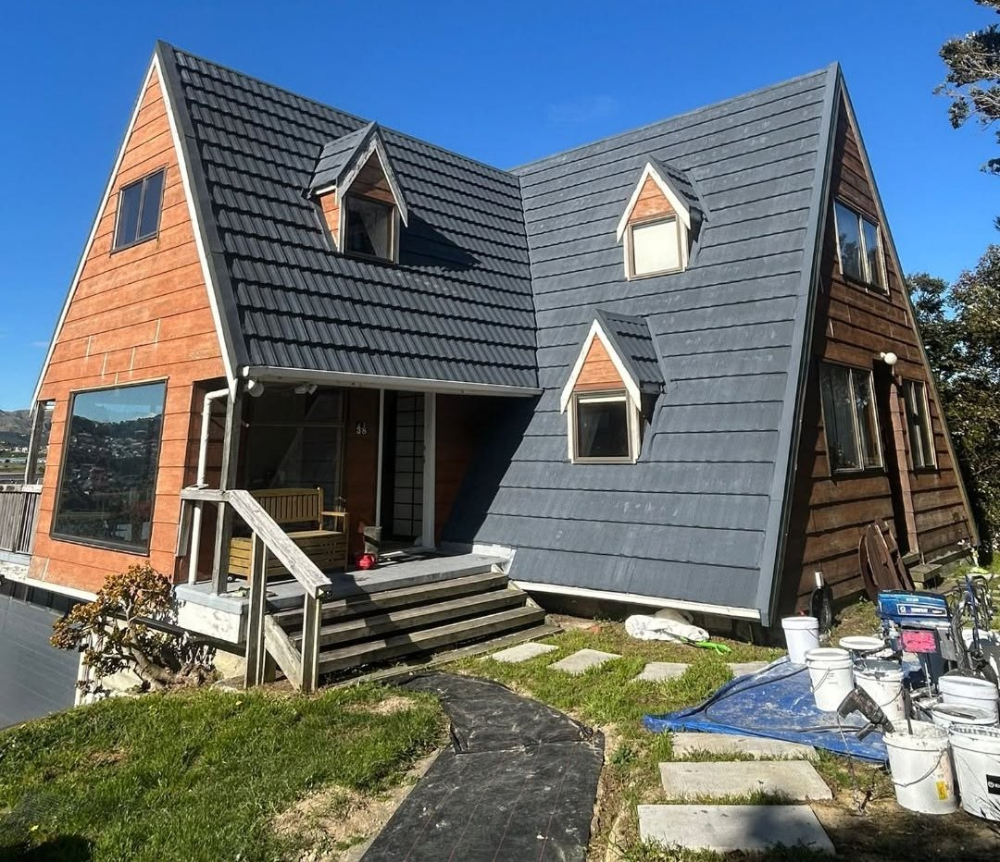
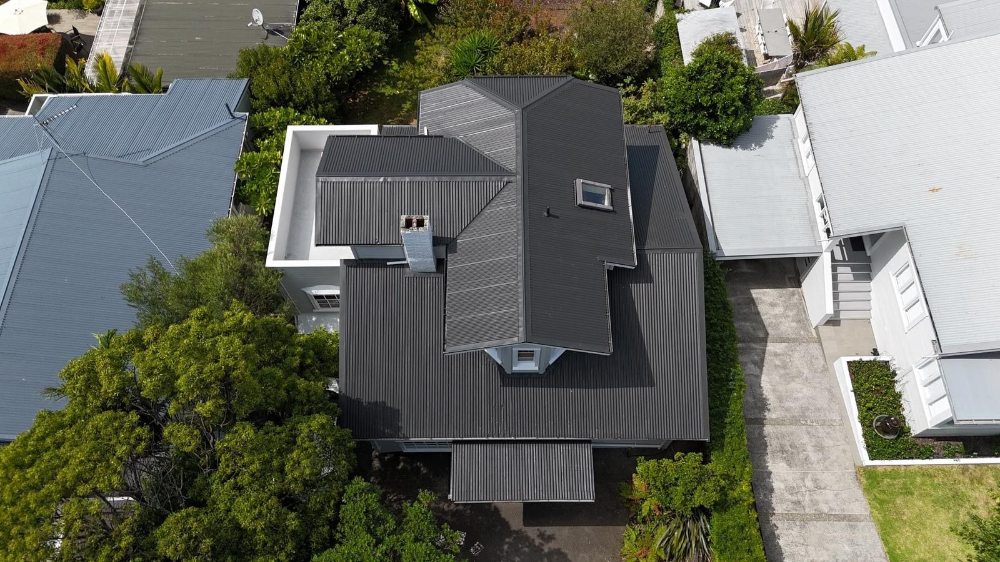
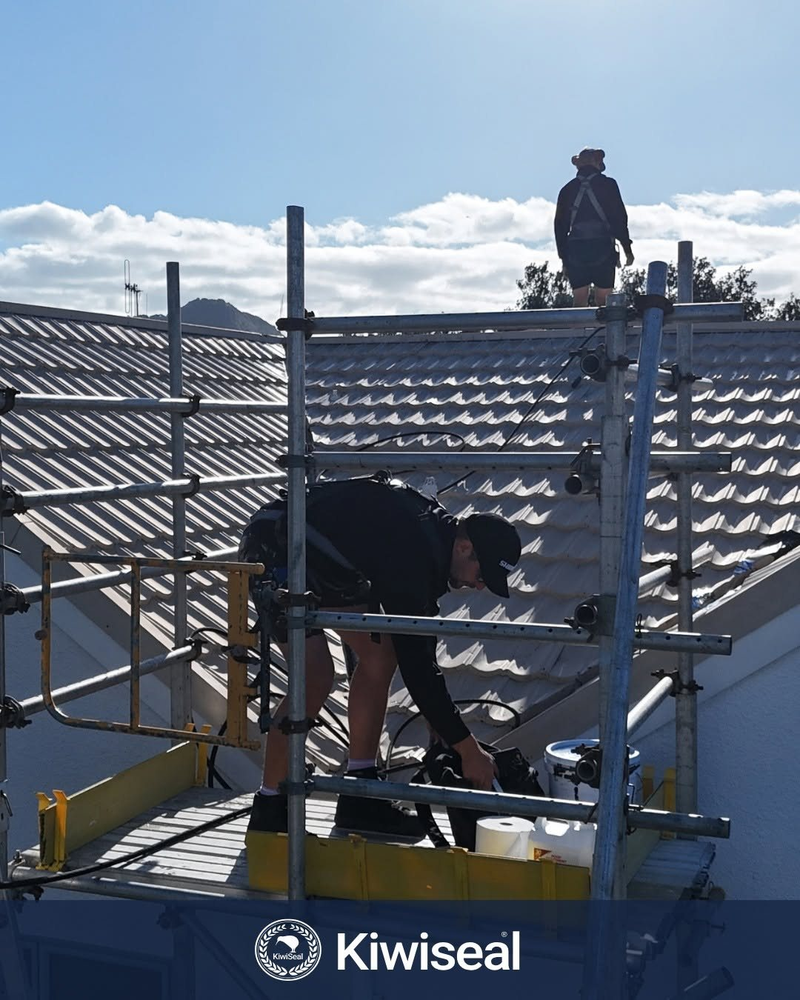
Kiwiseal is a liquid membrane we manufacture here in New Zealand. We fix what is broken first, then seal the whole roof. You end up with a roof that looks new and a 10 year warranty, without paying for a full re-roof.
Book a free roof assessment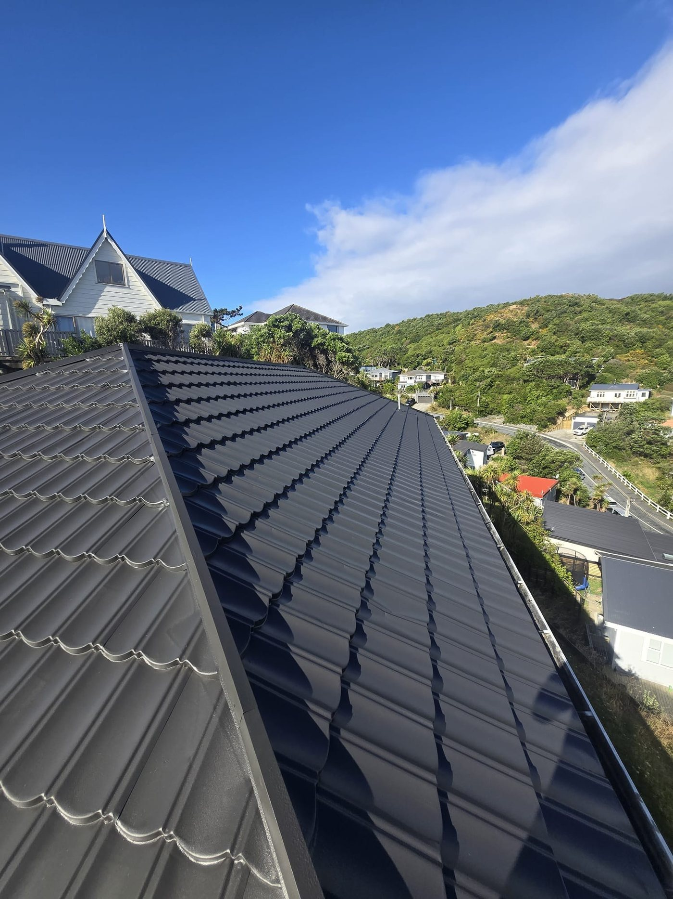
Kiwiseal makes its own membrane and applies it with its own crews. We work on homes, commercial buildings, schools, warehouses, body corporates and rural property, from Northland down to Wellington. One team quotes it, repairs it, seals it and warrants it.
See what we do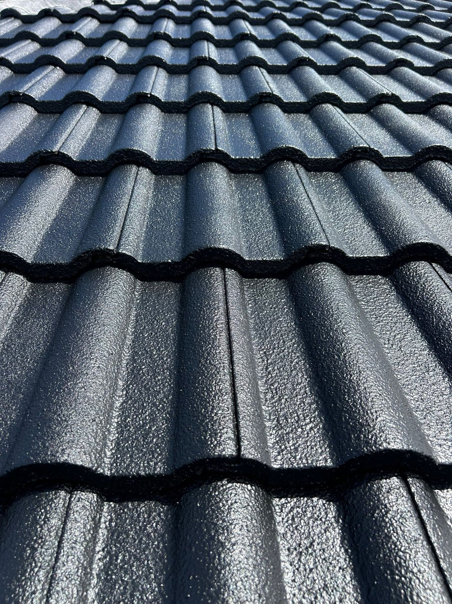
5.00
Average across 89 Google reviews
1214+
Roofs restored since 2018
10 years
Warranty on every membrane system

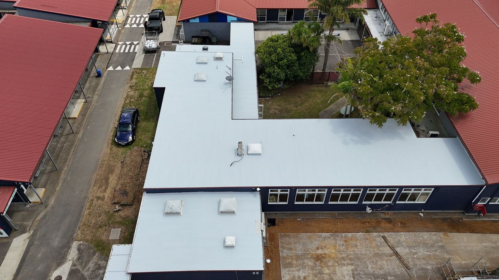
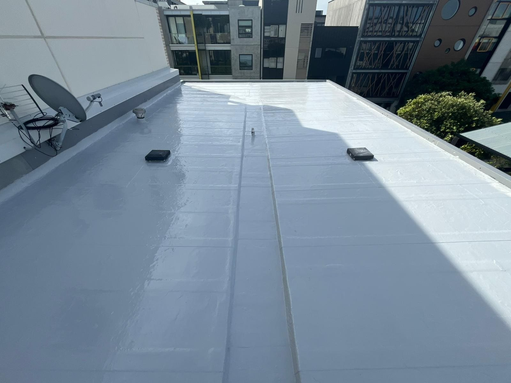
Paint hides a bad roof. A membrane only works if what sits under it is sound. So every job starts with the mechanical work: rust treatment, rescrewing sheets, replacing broken tiles, repointing ridge caps. The coating goes on after that, not instead of it.

Four branches cover Auckland and Northland, Waikato, Bay of Plenty and Wellington. Our own trained crews do the work, so the person who quotes the job is accountable for it.
Corroded sheets, tired screws and a roof the owner had been quoted to replace. We treated the rust, rescrewed the lot and finished it in Kiwiseal. No skip bin, no weeks of noise, no new roof invoice.
Get this for your roof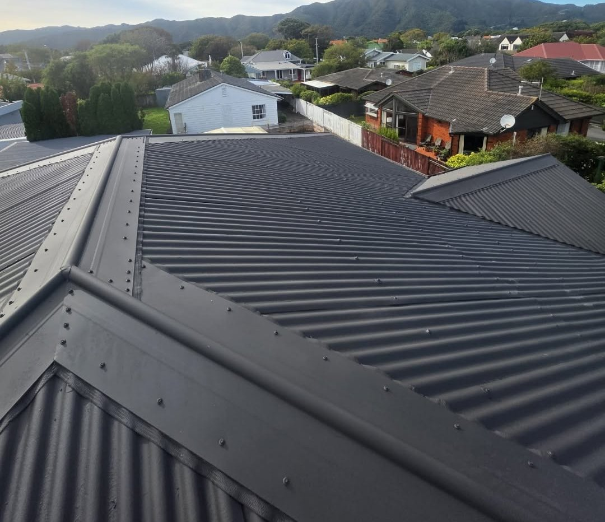
A steep two storey roof with dormers and a lot of detail around the flashings. Scaffolded, prepped and coated without touching the cedar cladding underneath it.
Get this for your roofMoss, lichen and porous tile. Chemical clean to kill the growth, water blast, repoint the ridge caps, then Kiwiseal Ultra and a top coat. The tiles stayed, the leaks did not.
Get this for your roof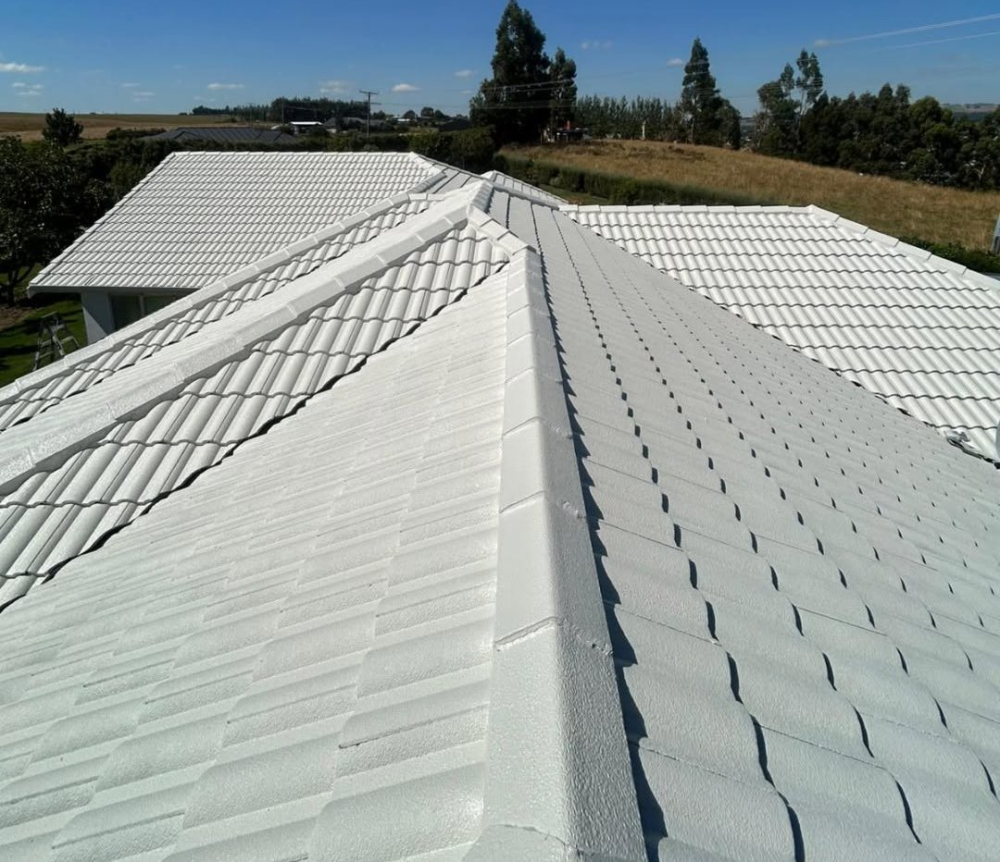
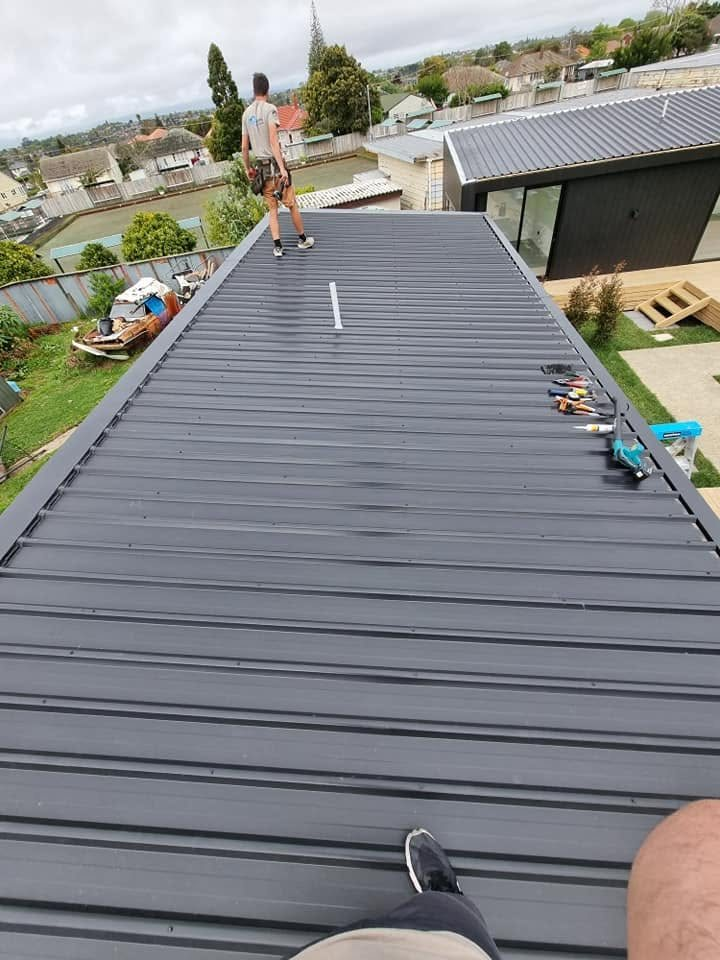
Two coat and three coat systems carry the same cover
10 years
Book a free assessmentWhat actually goes onto your roof
NZ made
Ask about the products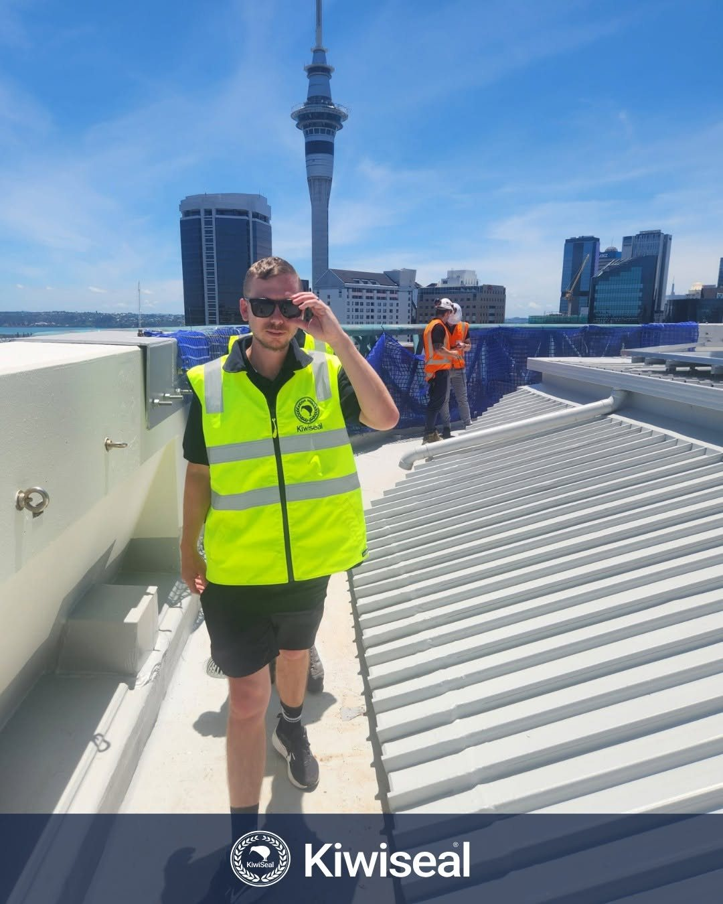
We come out, get on the roof and write down what is actually wrong with it. You get a fixed, all inclusive price covering repairs, scaffolding and the membrane.
Chemical clean to kill the moss, then a water blast. We patch, rescrew, replace broken tiles and treat the rust before a drop of membrane goes on.
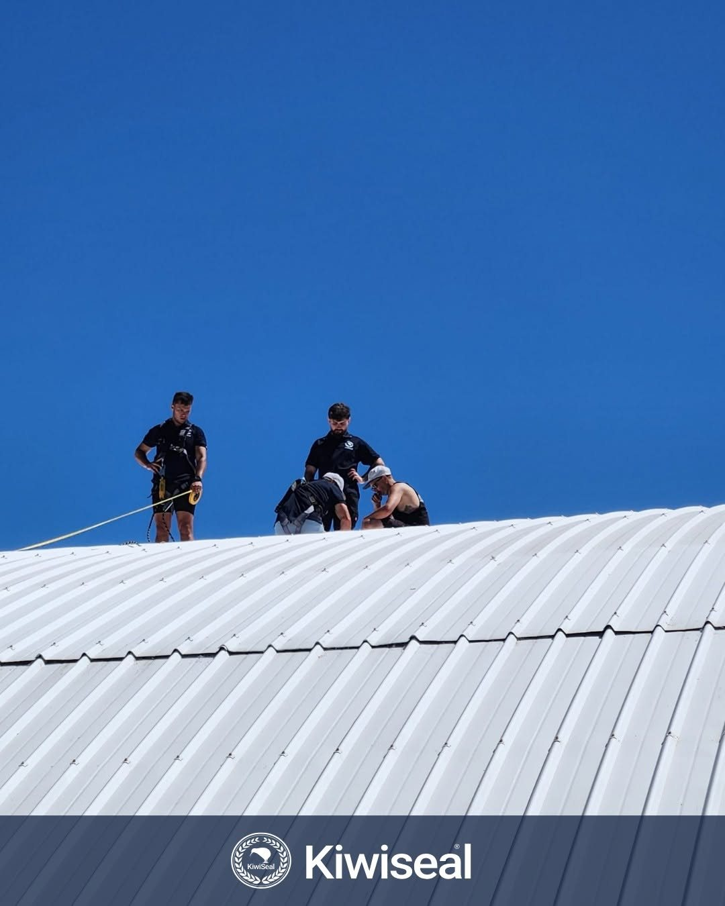
Two coats of self priming membrane, a final inspection, then the site gets cleaned up. Your 10 year warranty follows in writing.
The team did a great job, very happy with the quality of care and attention. The 50 year old concrete tile roof looks brand new. 10 year warranty sent through once my payment had cleared.
Excellent work, my roof looks like new. Communication good, a text to let me know when they were coming. I would definitely recommend them.
5.00 out of 5
Across 89 Google reviews
They came out promptly to scope the work and provided a very competitive quote, especially compared to others who were pushing for a full roof replacement at a much higher cost. The team was friendly, turned up on time, and worked hard throughout.
We had a couple of roofing problems at the Lodge. Fitting around our busy times Kiwiseal completed the repairing, sealing and painting very quickly and to a very high standard. The roof looks new and I couldn't be happier.
Usually, yes. The membrane works on long run iron, short sheet iron, concrete tile, metal and Decromastic tile, butynol, asphalt shingle and commercial tray roofing. What matters is the condition underneath. If the roof is too far gone to support the membrane we cannot warrant it, and we will say so at the assessment rather than take the job.
Two to four days for most roofs, weather depending. That covers the chemical clean, the water blast, patching and masking, rust treatment and two coats of membrane. A re-roof on the same house is usually weeks of noise, skips and exposed framing.
You can. Kiwiseal is a water based polyurethane acrylic membrane with no volatile organic compounds. It is safe to walk on and safe to collect drinking water from once it has cured, which is why it suits rural and lifestyle properties on tank supply.
Under 25 degrees of pitch, often not. We assess health and safety job by job and tell you at quote stage. Whatever the job needs is written into the quoted price, so there is no scaffolding invoice arriving later.
Kiwiseal can encapsulate an asbestos roof, which locks the material in rather than disturbing it. We skip the water blast and start with a moss and mould killer, then coat over the top. You get the same waterproofing, finish and warranty, with the asbestos sealed underneath.
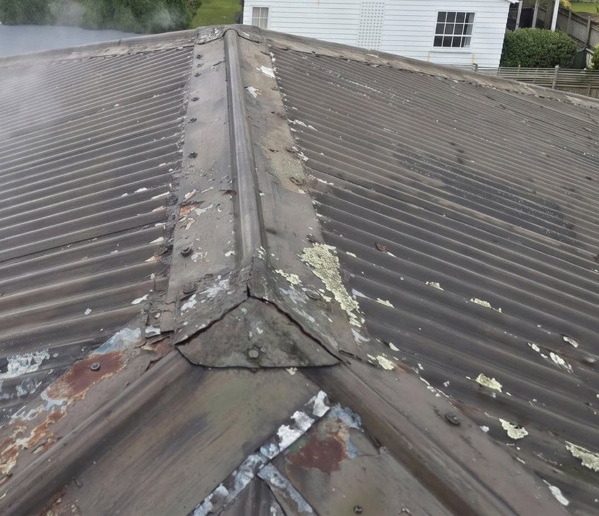
Bellevue Road
Corroded iron, quoted elsewhere as a full re-roof
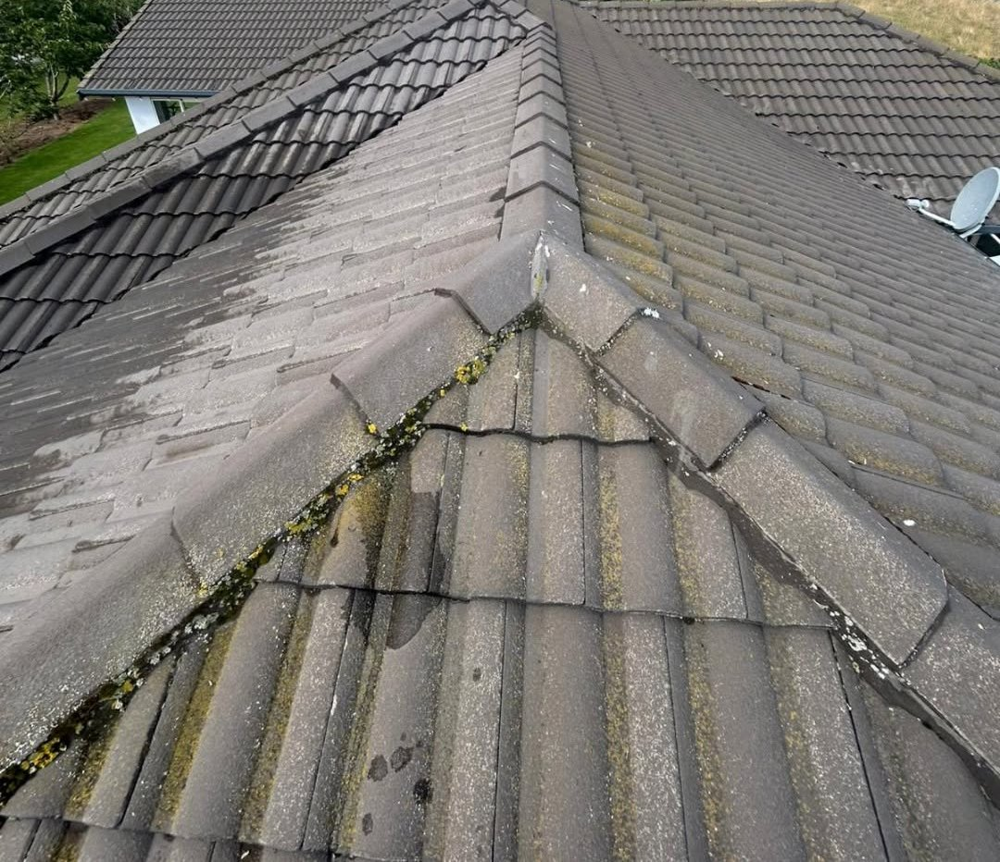
Willow Lane
Moss and lichen across fifty year old concrete tile